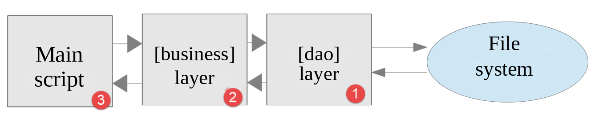
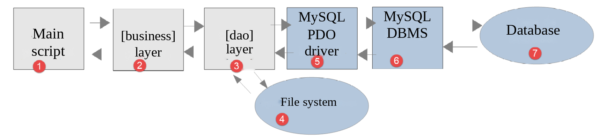

13. Exercício prático – Versão 5
Já escrevemos várias versões deste exercício. A última versão usava uma arquitetura em camadas:

A camada [dao] implementa a interface [InterfaceDao]. Criamos uma classe que implementa essa interface:
- [DaoTaxWithTaxAdminDataInJsonFile], que obtinha os dados do imposto de um arquivo JSON.
Implementaremos a interface [InterfaceDao] usando uma nova classe, [DaoTaxWithTaxAdminDataInDatabase], que obterá os dados da administração tributária de um banco de dados MySQL.
13.1. Criando o banco de dados [dbtaxes-2019]
Seguindo o exemplo do capítulo anterior, criaremos um banco de dados MySQL chamado [dbtaxes-2019], pertencente ao usuário [admtaxes] com a senha [pwdtaxes]. Esse banco de dados terá duas tabelas:
- a tabela [tbbrackets] conterá as faixas do imposto;
- a tabela [tbconstants] conterá as constantes usadas no cálculo do imposto.
O curso de PHP 7 criava o banco de dados, o usuário e as tabelas usando o assistente do [phpMyAdmin] e depois exportava a estrutura resultante para um arquivo SQL. Faremos o caminho inverso: escreveremos diretamente o script SQL [dbtaxes-2019.sql], colocando-o na pasta [Data] da versão 5:
Comentários
- Linha 7: o banco de dados [dbtaxes-2019] é excluído caso exista. O script pode então ser executado novamente para regenerar o banco de dados caso ele tenha sido excluído ou corrompido. O nome do banco de dados contém um hífen: ele deve ser delimitado por crases ` para que o MySQL não o interprete como uma subtração;
- linha 8: cria o banco de dados com o conjunto de caracteres [utf8mb4];
- linhas 11–13: o usuário [admtaxes], com a senha [pwdtaxes], é (re)criado. Esse usuário tem todos os privilégios sobre o banco de dados [dbtaxes-2019];
- linha 16: os comandos seguintes se aplicam ao banco de dados [dbtaxes-2019];
- Linhas 19–25: a tabela [tbbrackets] tem quatro colunas:
- [id] é um inteiro, a chave primária da tabela, e será autoincrementado pelo SGBD ([AUTO_INCREMENT]). Isso significa que o MySQL gerenciará os valores da chave primária durante as inserções: atribuirá o valor 1 à chave primária da primeira inserção, depois 2 à seguinte, e assim por diante;
- [limits] é um número decimal de 10 dígitos com 2 casas decimais ([DECIMAL(10, 2)]). Ele conterá os elementos da coluna [limits] das faixas do imposto;
- [coeffr] é um número decimal de 6 dígitos com 2 casas decimais. Ele conterá os elementos da coluna [coeffR] das faixas do imposto;
- [coeffn] é um número decimal de 10 dígitos com 2 casas decimais. Ele conterá os elementos da coluna [coeffN] das faixas do imposto;
- Linhas 28–41: a tabela [tbconstants] tem uma chave primária [id] e uma coluna decimal para cada constante do cálculo do imposto. Ela conterá apenas uma linha.
O tipo [DECIMAL] armazena números exatamente, ao contrário dos tipos reais [FLOAT] e [DOUBLE], que armazenam um valor aproximado em binário: 0.14 é armazenado exatamente como 0.14.
Execute este script no terminal do [Laragon] aberto na pasta [version-05/Data] usando o comando:
Se tudo correr bem, nada é exibido. Verifique o resultado conectando-se como [admtaxes]:
- Linha 6: a coluna [id] é a chave primária (PRI), e seus valores são gerenciados pelo MySQL (auto_increment).
Naturalmente, você também pode abrir e executar o script [dbtaxes-2019.sql] no [HeidiSQL] ou no [phpMyAdmin] para examinar ali a estrutura das tabelas.
13.2. Organização do código
Para ilustrar melhor o papel dos vários scripts PHP que estamos escrevendo, organizaremos o código da versão 5 em pastas:
- [Entities]: entidades da aplicação, objetos trocados entre as camadas;
- [Utilities]: utilitários da aplicação;
- [Data]: dados usados ou produzidos pela aplicação e o script do banco de dados SQL. Aqui, decidimos usar apenas arquivos JSON como arquivos de texto. Eles oferecem várias vantagens:
- são reconhecidos por muitas ferramentas;
- essas ferramentas oferecem realce de sintaxe. Além disso, a notação JSON segue regras específicas. Quando essas regras não são respeitadas, as ferramentas sinalizam o erro. Por exemplo, um erro difícil de detectar em um arquivo de texto simples é usar a letra maiúscula O no lugar do número zero. Se, no arquivo JSON, você digitar sem querer ["coupleIncomeCeilingForReduction": 42O74], [VS Code] sublinha o valor 42O74 em vermelho — já que não é nem um número nem uma string entre aspas — e a aba [Problems] exibe o erro. A atenção do desenvolvedor é chamada para o erro, e ele pode corrigi-lo;
- [Dao]: as interfaces, traits e classes da camada [dao];
- [Business]: a interface e a classe da camada [business]. O curso de PHP 7 chamava essa pasta de [Métier]. Evitamos caracteres acentuados em nomes de pastas e arquivos: eles causam problemas quando os arquivos são transferidos de um sistema para outro (arquivos ZIP, repositórios Git etc.);
- [Main]: os scripts principais da versão 5;
- [Tests]: os testes da versão 5 ([PHPUnit]).
A versão 5 tem dois objetivos distintos:
- popular o banco de dados MySQL [dbtaxes-2019] com o conteúdo do arquivo JSON [Data/taxadmindata.json];
- implementar o cálculo do imposto usando dados tributários que agora vêm do banco de dados MySQL [dbtaxes-2019].
Trataremos esses dois objetivos separadamente.
13.3. Populando o banco de dados [dbtaxes-2019]
13.3.1. Objetivo
O arquivo [Data/taxadmindata.json] contém os dados da administração tributária. Este é o arquivo da versão 4:
Nosso objetivo é transferir esses dados para o banco de dados MySQL [dbtaxes-2019] criado anteriormente.
13.3.2. Entidades
As entidades são os objetos trocados entre as camadas da aplicação. Três delas vêm da versão 4 e são incluídas sem nenhuma modificação:
- a exceção [TaxException];
- a classe [readonly] [TaxAdminData] que contém os dados da administração tributária, construída por meio de seus métodos estáticos [fromJsonFile] e [fromArray];
- a classe [readonly] [TaxPayerData] que contém os dados de um contribuinte e os resultados do seu cálculo de imposto.
Estamos adicionando uma quarta, a entidade [Database], que descreve o banco de dados.
13.3.2.1. Por que não há uma classe base [BaseEntity]?
O curso de PHP 7 introduzia neste ponto uma classe pai, [BaseEntity], da qual todas as entidades derivavam. Ela se baseava em uma regra: os atributos de uma entidade têm os mesmos nomes das chaves do arquivo JSON que ela encapsula. [BaseEntity] conseguia então inicializar qualquer entidade a partir de um arquivo JSON ou de um array associativo usando o seguinte laço:
Os atributos das entidades eram declarados como [protected] (sem tipo) para que a classe pai pudesse modificá-los, e cada entidade acrescentava seus próprios getters e setters. Não adotamos essa solução:
- o laço acima cria silenciosamente um atributo dinâmico quando uma chave do arquivo JSON está escrita incorretamente. Isso é obsoleto (deprecated) desde o PHP 8.2 e é proibido em classes [readonly];
- as entidades podiam ser modificadas por qualquer camada, por meio de seus setters ou do método [setFromArrayOfAttributes]. Nossas entidades são imutáveis: uma camada não pode modificar acidentalmente um objeto recebido de outra camada;
- a regra “mesmos nomes no JSON e na classe” continua valendo, mas o PHP 8 a utiliza diretamente: a expressão [new self(...$data)] converte as chaves do array em argumentos nomeados do construtor (PHP 8.1). É o PHP que verifica então que nenhuma chave está faltando, que nenhuma é desconhecida e que cada valor tem o tipo correto. Não há mais código comum a extrair para uma classe pai.
Por fim, a versão 4 já adicionou o método [fromArray] à classe [TaxAdminData]. Veremos que esse método é suficiente para construir um objeto [TaxAdminData] a partir dos dados lidos do banco de dados. Uma consequência importante é que a camada [business] da versão 4 será reutilizada sem modificação: no curso de PHP 7, as mudanças nas entidades haviam exigido a modificação da camada [business].
13.3.2.2. A entidade [Database]
A entidade [Database] será usada para encapsular os dados do seguinte arquivo JSON: [Data/database.json]:
Seus atributos descrevem as características do banco de dados MySQL [dbtaxes-2019]:
Atributo | Função |
dsn | O DSN do banco de dados |
id | o proprietário do banco de dados |
pwd | sua senha |
tableBrackets | o nome da tabela que contém as faixas do imposto |
colId / colLimits / colCoeffR / colCoeffN | os nomes das colunas da tabela [tableBrackets] |
tableConstants | o nome da tabela que contém as constantes do cálculo do imposto |
colHalfShareQfCeiling / colSingleIncomeCeilingForReduction / colCoupleIncomeCeilingForReduction / colHalfShareReductionValue / colSingleDiscountCeiling / colCoupleDiscountCeiling / colSingleTaxCeilingForDiscount / colCoupleTaxCeilingForDiscount / colTenPercentAllowanceMax / colTenPercentAllowanceMin | os nomes das colunas da tabela [tableConstants] que contém as constantes do cálculo do imposto |
Por que listar os nomes das tabelas e das colunas se já os conhecemos e é improvável que mudem? Depois do SGBD MySQL, usaremos o SGBD PostgreSQL para armazenar os dados da administração tributária. No entanto, os nomes de colunas e tabelas no PostgreSQL não seguem as mesmas regras do MySQL. Teremos que usar nomes diferentes. Isso vale também para outros SGBDs. Se quisermos que o código seja portável entre SGBDs, é preferível usar parâmetros em vez de nomes de tabelas e colunas fixos no código. Em comparação com o curso de PHP 7, adicionamos o atributo [colId], que é o nome da coluna da chave primária na tabela de faixas: vamos precisar dele para reler as faixas na ordem em que foram inseridas.
A classe [Database] é a seguinte: [Entities/Database.php]:
Comentários
- Linha 9: assim como [TaxAdminData], a classe [Database] é imutável e não pode ser derivada;
- linhas 12–23: os nomes das dez constantes do cálculo do imposto. Esses também são os nomes dos atributos da classe [TaxAdminData];
- linhas 26–50: o construtor privado declara, por promoção, um atributo público do tipo [string] para cada chave do arquivo [database.json], com o mesmo nome;
- linha 30: o atributo do PHP 8.2 [#[\SensitiveParameter]] marca o parâmetro como sensível. Se uma exceção for lançada durante a execução do construtor, o valor da senha não aparecerá na pilha de chamadas da exceção (stack trace), que costuma ser gravada em arquivos de log: ele é substituído ali por um objeto [SensitiveParameterValue];
- linhas 53–68: o método estático [fromJsonFile] constrói um objeto [Database] a partir de um arquivo JSON:
- linha 56: a leitura e a decodificação do arquivo JSON ficam a cargo da classe [Utilities], descrita adiante. Essas operações podem lançar uma exceção [TaxException];
- linha 58:
JSONdeve ser um objeto — ou seja, um array associativo, e não uma lista; - linha 63: as chaves do array [$data] tornam-se argumentos nomeados do construtor. Se uma chave estiver faltando, o PHP lança um erro [ArgumentCountError]; se uma chave for desconhecida, um erro [Error] (“Unknown named parameter”); se um valor não for uma string, um erro [TypeError]. Esses três erros derivam da classe [Error];
- Linhas 64–66: o erro é capturado e convertido em [TaxException] com o código 21, mantendo o erro original ([$ex]) como exceção anterior. A mensagem de erro do PHP, incluída na mensagem, especifica exatamente o que está errado;
- linhas 71–79: o método [constantColumns] retorna o array associativo [nome da constante => nome da coluna]. Para a constante [halfShareQfCeiling], o nome da coluna está no atributo [colHalfShareQfCeiling]. A função [ucfirst] coloca em maiúscula a primeira letra de uma string, e a sintaxe [$this->{"col" . ucfirst($constant)}] refere-se ao atributo cujo nome é o valor da expressão entre chaves. Esse método nos poupará de escrever quase o mesmo código dez vezes na camada [dao].
13.3.2.3. A classe [Utilities]
A versão 4 usava a classe [Utilities] para remover o caractere de fim de linha das linhas de um arquivo de texto. Agora usamos apenas arquivos JSON: a classe [Utilities] passa a cuidar tanto da leitura quanto da escrita de arquivos JSON [Utilities/Utilities.php]:
Comentários
- Linhas 17–30: o método [readJsonFile] lê um arquivo JSON e retorna seu conteúdo decodificado, que pode ser de qualquer tipo ([mixed]): um objeto JSON resulta em um array associativo, enquanto um array JSON resulta em uma lista. O código é o que escrevemos no método [TaxAdminData::fromJsonFile] na versão 3. Os erros são relatados por uma [TaxException] com o código 15 (arquivo ilegível) ou 16 (JSON inválido);
- linhas 33–40: o método [writeJsonFile] grava um valor em formato JSON em um arquivo de texto. As opções de [json_encode] são combinadas pelo operador [|]:
- [JSON_PRETTY_PRINT] produz um JSON indentado e fácil de ler;
- [JSON_UNESCAPED_UNICODE] grava os caracteres acentuados como são (marié) em vez de seu código (marié);
- [JSON_PRESERVE_ZERO_FRACTION] grava o número real 0.0 como 0.0 em vez de 0: isso distingue números reais de inteiros no arquivo de saída;
- [JSON_THROW_ON_ERROR] dispara uma exceção [JsonException] se o valor não puder ser codificado em JSON.
13.3.3. A camada [dao]
Agora podemos escrever o código que transferirá os dados do arquivo JSON [taxadmindata.json] para as tabelas [tbbrackets, tbconstants] do banco de dados MySQL [dbtaxes-2019]. Usaremos a seguinte arquitetura:

A camada [dao] implementará a seguinte interface [InterfaceDao4TransferAdminData2Database]: [Dao/InterfaceDao4TransferAdminData2Database.php]:
- Linha 13: o método [transferAdminData2Database] é responsável por armazenar os dados da administração tributária em um banco de dados.
A interface [InterfaceDao4TransferAdminData2Database] será implementada pela seguinte classe [DaoTransferAdminDataFromJsonFile2Database]: [Dao/DaoTransferAdminDataFromJsonFile2Database.php]:
Comentários
Aqui, aplicamos o que aprendemos no capítulo sobre MySQL.
- Linha 9: a classe [DaoTransferAdminDataFromJsonFile2Database] implementa a interface [InterfaceDao4TransferAdminData2Database];
- linha 12: o atributo [$database] é um objeto do tipo [Database] que encapsula os dados do arquivo [database.json];
- linha 14: o atributo [$taxAdminData] é um objeto do tipo [TaxAdminData] que encapsula os dados do arquivo [taxadmindata.json];
- linhas 17–22: o construtor recebe como parâmetros os nomes dos arquivos [database.json, taxadmindata.json] e inicializa os dois atributos. Se um dos arquivos for inválido, uma exceção [TaxException] é lançada ao código chamador;
- linha 26: o único método da interface [InterfaceDao4TransferAdminData2Database] é implementado;
- linha 31: a conexão com o banco de dados é aberta. Observe a notação [\PDO], que se refere à classe [PDO] do PHP. De fato, como estamos no namespace [Application], se escrevêssemos simplesmente [PDO], esse nome relativo receberia como prefixo o namespace atual e se referiria, portanto, à classe [Application\PDO], que não existe. O método [PDO::connect] retorna aqui um objeto do tipo [Pdo\Mysql], já que o DSN começa com [mysql:]. Nada nesta classe depende do MySQL: é o DSN — lido do arquivo [database.json] — que determina o SGBD utilizado;
- Linhas 33–39: as tabelas [tbbrackets, tbconstants] são populadas dentro de uma transação. Os métodos [fillTableBrackets] e [fillTableConstants] disparam uma [PDOException] assim que algo dá errado. Nesse caso, a execução continua na cláusula [catch], e o banco de dados permanece em seu estado inicial: não há risco de ter uma tabela [tbbrackets] preenchida e uma tabela [tbconstants] vazia;
- Linhas 40–47: caso em que uma exceção foi lançada pelo código. Se houver uma transação em andamento, é feito o rollback dela. Em seguida, uma exceção do tipo [TaxException], com o código 30, é lançada, junto com a mensagem da exceção original, que passa a ser a exceção anterior. O código chamador só precisa, assim, tratar um tipo de exceção;
- linha 49: o procedimento do PHP 7 fechava a conexão dentro de uma cláusula [finally] usando a instrução [$connection = NULL]. Isso é desnecessário: a variável local [$connection] desaparece no fim do método e, com ela, a conexão.
O código do método [fillTableBrackets] é o seguinte:
Comentários
- Linha 53: o método [fillTableBrackets] recebe uma conexão aberta como parâmetro. Sabemos também que uma transação foi iniciada nessa conexão;
- Linhas 56–57: dois atalhos para evitar escrever [$this->database] e [$this->taxAdminData] ao longo do código. São cópias de referências de objetos, e não cópias dos próprios objetos;
- linha 59: o conteúdo atual da tabela "brackets" é excluído. O nome da tabela é inserido na string usando a sintaxe ["$database->tableBrackets"]: o PHP substitui a expressão pelo valor do atributo;
- Linhas 61–64: é preparada a inserção de linhas na tabela. Aqui, são usados os nomes de tabela e de colunas fornecidos pelo atributo [$database]. Nomes de tabelas e colunas não podem ser parâmetros de um comando preparado; somente valores podem. É por isso que eles são inseridos no texto do comando SQL. Eles vêm de um arquivo de configuração e não de um usuário: não há risco de injeção de SQL;
- Linhas 66–72: o comando de inserção preparado é executado quantas vezes forem necessárias, uma por faixa do imposto. [$i] é o número da faixa, que serve de índice nos arrays [coeffR] e [coeffN].
O código do método [fillTableConstants] é o seguinte:
Comentários
- Linha 76: o método [fillTableConstants] também recebe uma conexão aberta na qual há uma transação em andamento;
- Linha 81: a tabela [tbconstants] é esvaziada;
- linha 83: o array [nome da constante => nome da coluna], por exemplo, [["halfShareQfCeiling" => "halfShareQfCeiling", ...]];
- linha 85: os nomes dos parâmetros do comando preparado: [[":halfShareQfCeiling", ...]]. São os nomes das constantes precedidos por dois-pontos;
- linhas 86–89: preparação do comando SQL de inserção. A função [implode] constrói a lista de colunas e a lista de parâmetros, separadas por vírgulas. Isso resulta no comando [insert into tbconstants (halfShareQfCeiling, ...) values (:halfShareQfCeiling, ...)]. O curso de PHP 7 escrevia esse comando inteiro, coluna por coluna, em cerca de vinte linhas;
- linhas 91–94: o array de valores dos parâmetros [nome da constante => valor]. A sintaxe [$this->taxAdminData->$constant] especifica o atributo do objeto [TaxAdminData], cujo nome é o valor da variável [$constant];
- Linha 96: execução do comando de inserção. Há apenas uma linha a inserir.
13.3.4. O script principal
O script principal [Main/MainTransferAdminDataFromJsonFile2MySQLDatabase.php] usa a camada [dao] para realizar a transferência dos dados:
Comentários
- Linhas 10–15: carregam as classes e interfaces necessárias para a transferência. Os caminhos são relativos à pasta do script ([Main]): [__DIR__ . "/../Entities"] refere-se à pasta vizinha [Entities];
- Linhas 18–19: os caminhos dos dois arquivos JSON, que também são relativos à pasta do script. O curso de PHP 7 usava caminhos relativos à pasta atual (["../Data/database.json"]): o script só funcionava se fosse executado a partir da pasta [Main];
- linha 23: a camada [dao] é instanciada passando-se ao construtor os nomes dos dois arquivos JSON;
- linha 25: a transferência dos dados é realizada;
- linhas 27–29: o código e a mensagem da exceção são exibidos. O curso de PHP 7 usava aqui a função [utf8_encode], que é obsoleta (deprecated) desde o PHP 8.2 e desnecessária, pois todas as nossas mensagens estão em UTF-8.
Quando executamos este script em um terminal aberto na pasta [Main], obtemos o seguinte resultado:
e o seguinte conteúdo no banco de dados:
- coluna [id]: os valores atribuídos pelo MySQL à chave primária. A numeração começa em 1. Se executarmos o script novamente, as linhas são excluídas e depois reinseridas, e o MySQL continua a numeração (6, 7…): um valor de chave auto-incremento nunca é reutilizado;
- os números têm duas casas decimais, de acordo com o tipo de dados [DECIMAL(10, 2)] das colunas.
A opção [\G] no fim do comando SQL exibe cada linha na vertical, uma coluna por linha da tela, o que é mais fácil de ler em uma tabela com muitas colunas:
13.4. Cálculo do imposto
13.4.1. Arquitetura
A versão 4 da aplicação de cálculo do imposto usava uma arquitetura em camadas:
A camada [dao] implementa a interface [InterfaceDao]. A classe [DaoTaxWithTaxAdminDataInJsonFile] da versão 4 obtinha os dados do imposto de um arquivo JSON. Implementaremos a interface [InterfaceDao] usando uma nova classe, [DaoTaxWithTaxAdminDataInDatabase], que obterá os dados da administração tributária do banco de dados MySQL. A camada [dao], como antes, gravará os resultados e os erros em arquivos de texto e obterá os dados dos contribuintes também de um arquivo de texto. Só que, desta vez, esses arquivos de texto serão arquivos JSON. Além disso, sabemos que, se continuarmos respeitando a interface [InterfaceDao], a camada [business] não precisará ser modificada.

13.4.2. A entidade [TaxPayerData]
A classe [TaxPayerData] da versão 4 encapsula os dados de um contribuinte ([married, children, salary]) e os resultados do seu cálculo de imposto ([tax, surcharge, discount, reduction, rate]). Ela é mantida como está. Os dados dos contribuintes estão agora no seguinte arquivo JSON [Data/taxpayersdata.json]:
As chaves dos objetos JSON são os nomes dos atributos da classe [TaxPayerData]. Observe o seguinte:
- linha 8: o contribuinte nº 1 (a numeração começa em 0) está incorreto: seus três dados são todos inválidos;
- linha 14: o número de filhos do contribuinte nº 2 é informado como uma string. Nós o aceitaremos;
- os outros onze contribuintes são os dos testes oficiais da administração tributária, usados desde a versão 1.
13.4.3. A camada [dao]
13.4.3.1. A interface [InterfaceDao]
A interface [InterfaceDao] da versão 4 é incluída sem modificação [Dao/InterfaceDao.php]:
Os métodos [getTaxPayersData] e [saveResults] aceitam nomes de arquivos: nada indica que se trate de arquivos de texto simples ou de arquivos JSON. A interface, portanto, continua válida.
13.4.3.2. A trait [TraitDao]
A trait [TraitDao] implementa os métodos [getTaxPayersData] e [saveResults] da interface [InterfaceDao]. Como passamos de arquivos de texto simples para arquivos JSON, precisamos reescrevê-la como [Dao/TraitDao.php]:
Comentários
- Linhas 13–44: o método [getTaxPayersData] recebe os seguintes parâmetros:
- [$taxPayersFilename]: o nome do arquivo JSON que contém os dados dos contribuintes [taxpayersdata.json];
- [$errorsFilename]: o nome do arquivo JSON que contém os erros [errors.json];
- Linha 17: o conteúdo do arquivo JSON com os dados dos contribuintes é decodificado no array [$taxpayers]. Se o arquivo JSON se mostrar inutilizável, uma exceção [TaxException] é lançada;
- linha 18: o conteúdo deve ser um array JSON, isto é, uma lista PHP. Caso contrário, é lançada uma exceção com o código 17;
- linha 22: o array [$taxPayersData] conterá os dados dos contribuintes encapsulados em objetos do tipo [TaxPayerData];
- linha 24: os erros serão acumulados no array [$errors];
- linhas 26–39: construção do array [$taxPayersData]. Antes de ser encapsulado em um objeto [TaxPayerData], os dados são validados pelo método [check], que retorna uma lista de atributos inválidos, ou uma lista vazia se os dados forem válidos:
- Linhas 30–34: caso em que os dados são válidos. Um novo objeto [TaxPayerData] é criado e adicionado ao array [$taxPayersData]. O estado civil é convertido para minúsculas, e o número de filhos e o salário são convertidos para inteiros: [(int) "2"] vale 2;
- Linha 37: caso em que os dados são inválidos. A mensagem de erro inclui o número do contribuinte incorreto no array JSON para que o usuário possa localizá-lo, e então o erro é adicionado ao array [$errors];
- Linha 41: os erros encontrados são registrados no arquivo JSON [$errorsFilename]. O curso de PHP 7 gravava incorretamente uma string JSON por linha: com vários erros, o arquivo não era um arquivo JSON válido. Aqui gravamos um array JSON dos erros;
- linha 43: retornamos o array de objetos [TaxPayerData] construídos: era esse o objetivo do método;
- linhas 47–70: o método privado [check] verifica a validade dos dados de um contribuinte. O parâmetro [$taxpayer] é do tipo [mixed]: um elemento do array JSON pode ser qualquer coisa (um objeto, um número, uma string etc.). O método agrega os atributos inválidos no array [$errors] na forma de arrays [atributo incorreto => valor]:
- linha 50: o elemento deve ser um objeto JSON;
- linha 55: o operador [??] (null coalescing) retorna o valor de [$taxpayer["married"]] se ele existir e não for [null], e [null] caso contrário. Isso evita o aviso que seria disparado por uma chave ausente;
- linhas 56–58: o estado civil deve ser uma string que represente "yes" ou "no", sem distinguir maiúsculas de minúsculas e ignorando espaços;
- linhas 61–68: o número de filhos e o salário devem ser inteiros positivos ou zero, fornecidos na forma de um número JSON (2) ou de uma string ("2"). Uma string deve ser composta de dígitos, opcionalmente cercados por espaços: é isso que a expressão regular [/^\s*\d+\s*$/] verifica. Observe a comparação [preg_match(...) === 1]: a função [preg_match] retorna 1 se a string corresponder ao padrão, 0 caso contrário, e [false] em caso de erro;
- Linhas 74–78: a implementação do método [saveResults] da interface [InterfaceDao]. O array de objetos [TaxPayerData] é armazenado diretamente no formato JSON: a função [json_encode] converte um objeto em um objeto JSON cujas chaves são os nomes de seus atributos públicos. O curso de PHP 7 construía a string JSON a partir do array "manualmente", concatenando as strings JSON dos objetos separadas por vírgulas e adicionando colchetes.
13.4.3.3. A classe [DaoTaxWithTaxAdminDataInDatabase]
A classe [DaoTaxWithTaxAdminDataInDatabase] implementa a interface [InterfaceDao] da seguinte forma: [Dao/DaoTaxWithTaxAdminDataInDatabase.php]:
Comentários
- linha 6: mantemos o namespace já usado nas outras classes da aplicação;
- linha 9: a classe [DaoTaxWithTaxAdminDataInDatabase] implementa a interface [InterfaceDao];
- linha 12: o trait [TraitDao] é importado. Sabemos que esse trait implementa parte da interface. O único método que resta implementar é o método [getTaxAdminData], que simplesmente retorna o atributo privado [$taxAdminData]. Podemos deduzir que o construtor precisará inicializar esse atributo. Esse é o seu único propósito;
- linha 20: o construtor recebe como único parâmetro o nome do arquivo JSON [database.json], que define o banco de dados MySQL [dbtaxes-2019];
- Linha 23: o arquivo JSON é usado para criar um objeto do tipo [Database], que é armazenado no atributo [$database]. Se o arquivo JSON não puder ser processado corretamente, uma exceção [TaxException] é lançada;
- linhas 28–33: a conexão com o banco de dados é aberta. O quarto parâmetro define o modo padrão de leitura das linhas: arrays associativos do tipo [coluna => valor];
- linha 35: uma transação é iniciada. Isso não é estritamente necessário, pois apenas dois comandos SQL serão executados, e esses comandos não modificam o banco de dados. No entanto, isso é feito para isolar o programa dos demais usuários do banco de dados: as duas tabelas são lidas no mesmo estado, mesmo que outro programa as modifique ao mesmo tempo;
- Linha 37: a tabela de faixas de tributação [tbbrackets] é lida por meio do método privado [getBrackets]. Esse método retorna o array [["limits" => [...], "coeffR" => [...], "coeffN" => [...]]];
- linha 39: a tabela de constantes de cálculo [tbconstants] é lida pelo método privado [getConstants]. Ele retorna o array [nome da constante => valor];
- Linha 41: se chegamos a esta linha, tudo correu bem. Portanto, confirmamos (commit) a transação;
- linhas 42–49: se chegamos a este ponto, ocorreu uma exceção. Portanto, desfazemos (rollback) a transação, caso uma esteja em andamento. Em seguida, para garantir exceções consistentes, relançamos o erro como uma exceção do tipo [TaxException] com o código 30;
- linha 52: a expressão [[...$brackets, ...$constants]] mescla os dois arrays associativos em um só, que tem exatamente as treze chaves esperadas pelo método [TaxAdminData::fromArray]. Esse método verifica os dados lidos do banco de dados, assim como verificou os dados do arquivo JSON, e os converte em números reais. O curso de PHP 7 inicializava o objeto [TaxAdminData] atributo por atributo, com dez chamadas a setters.
O método [getBrackets] é o seguinte:
Comentários
- linha 57: o método recebe como parâmetro uma conexão aberta na qual uma transação está em andamento;
- Linhas 62–65: o comando SELECT é preparado e depois executado. A cláusula [order by] sobre a chave primária garante que as faixas sejam lidas de volta na ordem em que foram inseridas. O curso de PHP 7 não tinha essa cláusula e dependia da ordem em que o MySQL retornava as linhas, o que não é garantido;
- linha 68: todas as linhas do resultado são lidas de uma só vez. Isso produz um array de arrays associativos, por exemplo, [[["limits" => "9964.00", "coeffr" => "0.00", "coeffn" => "0.00"], ...]]. Observe que os valores das colunas do tipo [DECIMAL] são retornados como strings: o PHP não tem um tipo decimal exato, e o driver não os converte para [float], o que resultaria em perda de precisão. O método [TaxAdminData::fromArray] fará a conversão;
- Linhas 70–74: a função [array_column] extrai uma coluna de um array de arrays associativos: [array_column($brackets, "limits")] retorna [["9964.00", "27519.00", ...]].
O método privado [getConstants] é o seguinte:
Comentários
- linha 82: o array [nome da constante => nome da coluna];
- linhas 84–86: o comando SELECT das dez colunas é preparado e depois executado. Observe as chaves em [{$this->database->tableConstants}]: sem elas, o PHP interpretaria apenas [$this->database] dentro da string;
- Linha 89: a tabela tem apenas uma linha, lida pelo método [fetch]. Esse método retorna [false] se não houver nenhuma linha. O operador [?:] retorna seu operando esquerdo se ele for avaliado como verdadeiro, e seu operando direito caso contrário: [$row] é, portanto, avaliado como um array vazio se a tabela estiver vazia;
- linha 91: para cada constante, procuramos o valor de sua coluna em [$row]. A função [array_map], quando aplicada a um único array, preserva suas chaves: obtemos o array [nome da constante => valor]. Se a tabela estiver vazia, todos os valores são [null], e o método [TaxAdminData::fromArray] informará um valor inválido.
Observe que a classe não depende do SGBD MySQL. É o arquivo [database.json] que define o SGBD utilizado, por meio do DSN do banco de dados.
13.4.4. A camada [business]

- Acabamos de implementar a camada [dao] [3];
- como respeitamos a interface [InterfaceDao], a camada [business] [2] pode permanecer inalterada. O curso de PHP 7, porém, precisou modificá-la, porque também havia alterado as entidades trocadas entre as camadas: o método [executeBatchTaxes] usava os setters da classe [TaxPayerData] da versão 4, que haviam sido removidos. Aqui, as entidades não mudaram.
A interface [InterfaceBusiness] e a classe [Business] da versão 4 são, portanto, incluídas sem nenhuma modificação na pasta [Business]. Lembre-se do método [executeBatchTaxes]:
- linha 192: a camada [business] desconhece que os dados dos contribuintes agora vêm de um arquivo JSON: ela solicita os dados à camada [dao] e recebe um array de objetos [TaxPayerData], como na versão 4;
- Linha 201: da mesma forma, ela desconhece que os resultados são salvos no formato JSON.
13.4.5. O script principal

- Acabamos de implementar as camadas [dao] [3] e [business] [2];
- ainda falta escrever o script principal [1].
O script principal [Main/MainCalculateTaxWithTaxAdminDataInMySQLDatabase.php] é semelhante ao da versão 4:
Comentários
- linhas 10–19: carregamento de todos os arquivos necessários para calcular o imposto;
- linhas 22–25: os nomes dos diversos arquivos JSON da aplicação;
- linha 29: construção da camada [dao];
- linha 31: construção da camada [business];
- linha 33: chamada ao método [executeBatchTaxes] da camada [business].
Resultados
A aplicação gera dois arquivos JSON na pasta [Data]:
- [results.json]: os resultados dos diversos cálculos de imposto;
- [errors.json]: que relata os erros encontrados no arquivo JSON [taxpayersdata.json].
O arquivo [errors.json] é o seguinte:
Isso significa que, em [taxpayersdata.json], a entrada nº 1 da tabela de contribuintes está incorreta, e explica por quê. O arquivo de resultados [results.json] é o seguinte:
1 2 3 4 5 6 7 8 9 10 11 12 13 14 15 16 17 18 19 20 21 22 23 24 25 26 27 28 29 30 31 32 33 34 35 36 37 38 39 40 41 42 43 44 45 46 47 48 49 50 51 52 53 54 55 56 57 58 59 60 61 62 63 64 65 66 67 68 69 70 71 72 73 74 75 76 77 78 79 80 81 82 83 84 85 86 87 88 89 90 91 92 93 94 95 96 97 98 99 100 101 102 103 104 105 106 107 108 109 110 111 112 | |
Observe que o contribuinte nº 2 do arquivo [taxpayersdata.json], cujo número de filhos era a string "2", tem 2 filhos listados nos resultados (linha 14): a string foi convertida em inteiro pela camada [dao]. Esses resultados são consistentes com os da versão 4.
13.5. Testes com [PHPUnit]
Como fizemos para a versão 4, escreveremos testes [PHPUnit] para a versão 5. Eles estão na pasta [version-05/Tests].
13.5.1. Teste da camada [dao]
O teste [Tests/DaoTest.php] é o seguinte:
1 2 3 4 5 6 7 8 9 10 11 12 13 14 15 16 17 18 19 20 21 22 23 24 25 26 27 28 29 30 31 32 33 34 35 36 37 38 39 40 41 42 43 44 45 46 47 48 49 50 51 52 53 54 55 56 57 58 59 60 61 62 63 64 65 66 67 68 69 70 71 72 73 74 75 76 77 78 79 80 81 82 83 84 85 86 87 88 89 90 91 92 93 94 95 96 97 98 99 100 101 102 103 104 105 106 107 108 109 110 111 112 113 114 115 116 117 118 119 120 121 122 123 124 125 126 127 128 129 130 131 132 133 134 135 136 137 | |
Comentários
- linhas 21–30: definição do ambiente de teste. Carregamos os arquivos das duas camadas [dao] da versão 5: a camada de transferência e a camada de cálculo do imposto;
- linhas 43–49: antes de cada teste, construímos a camada [dao] usando o arquivo [Data/database.json], exatamente como o script principal faz;
- linha 60: o método [testTaxAdminData] é idêntico ao da versão 4. No entanto, desta vez, os dados testados foram lidos do banco de dados;
- Linhas 81–90: testamos a transferência do arquivo JSON para o banco de dados e depois lemos o banco de dados novamente com uma nova camada [dao]. O objeto [TaxAdminData] resultante deve ser igual ([assertEquals]) ao construído a partir do arquivo JSON. Esse teste pressupõe que a transferência tenha carregado com sucesso os dados do arquivo [taxadmindata.json] no banco de dados: ele não modifica os dados esperados pelos outros testes;
- linhas 93–101: três descrições incorretas de banco de dados: um arquivo inexistente (código 15), um arquivo chamado [database-incomplete.json] ao qual falta a chave [colCoeffN] (código 21) e um arquivo chamado [database-wrong-pwd.json] com uma senha incorreta (código 30). Os dois últimos arquivos estão na pasta [Tests/data];
- linhas 104–111: verificamos que uma camada [dao], criada com uma descrição incorreta, lança uma exceção [TaxException] com o código de erro correto;
- linhas 114–128: leitura dos dados dos contribuintes a partir do arquivo JSON. Verificamos o número de contribuintes recuperados e o conteúdo do primeiro e do último registro, e depois o conteúdo exato do arquivo de erros;
- Linha 131: um arquivo de contribuintes inexistente deve disparar uma exceção de código 15.
13.5.2. Teste da camada [business]
O teste [Tests/BusinessTest.php] corresponde ao da versão 4. Apenas o ambiente de teste muda:
- Linha 10: a classe da camada [dao] utilizada;
- linhas 18–27: os arquivos carregados, os do script principal [MainCalculateTaxWithTaxAdminDataInMySQLDatabase];
- linha 41: a camada [business] é construída sobre uma camada [dao] que lê o banco de dados.
O data provider [taxpayers] e o método [testCalculateTax] são os da versão 4.
13.5.3. Execução dos testes
O SGBD MySQL deve estar iniciado ([Laragon] / Start All). Os testes são executados em um terminal aberto na pasta [php8-oct-2026]:
Todos os 18 testes passam: 7 testes da camada [dao] (incluindo 3 do provider [invalidDatabases]) e 11 testes da camada [business].